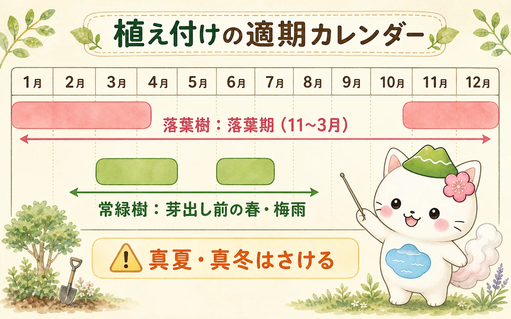
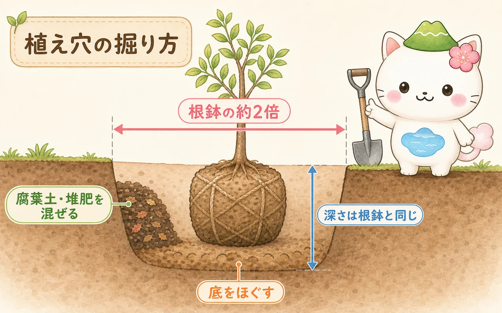
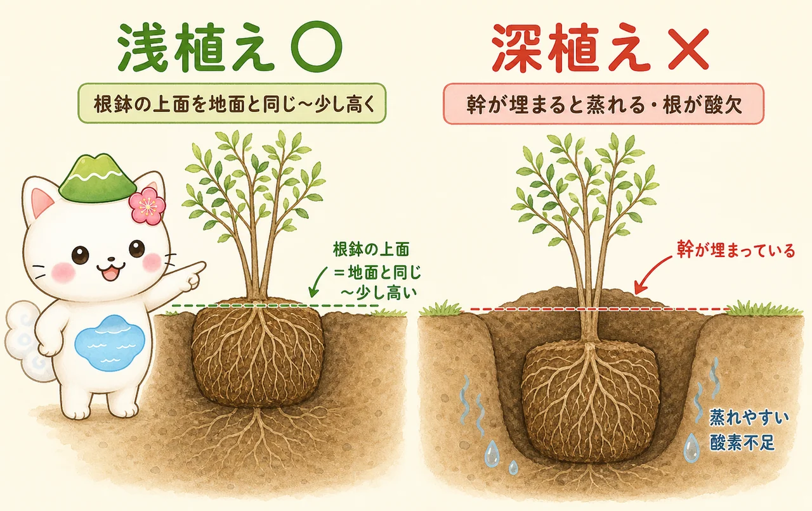
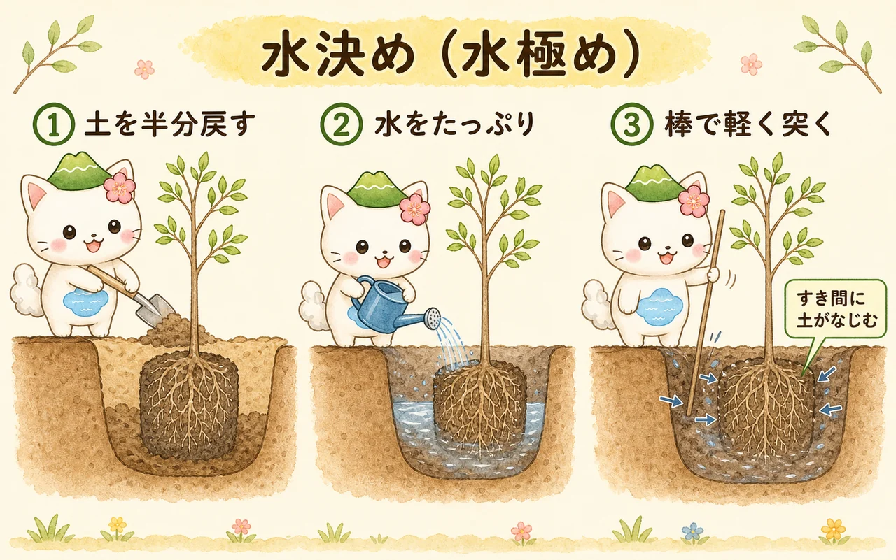
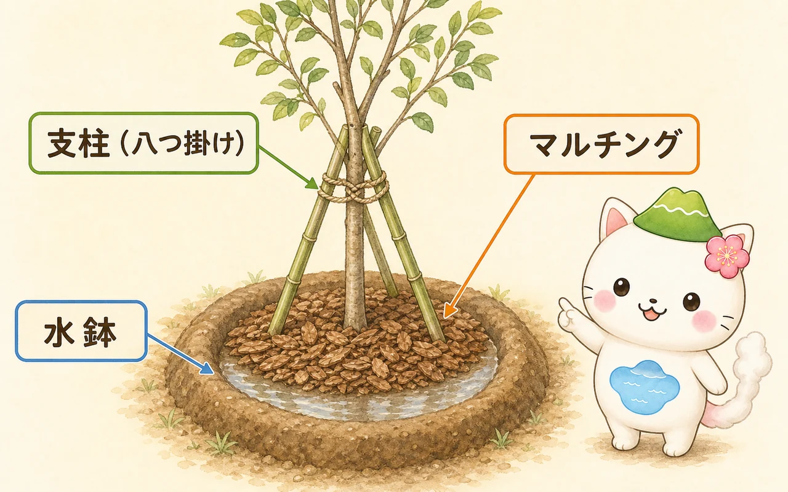

植え付けの適期はいつ？
木を植えるのにいちばん大事なのが時期えらびです。根が動きやすく、木の負担が少ない時期に植えると、しっかり根づきます。基本は木の活動がゆるやかな時期です。

落葉樹は「落葉期（休眠期）」
葉を落として休んでいる11〜3月ごろが適期です（厳寒期はさけ、暖地なら12〜2月、寒冷地は3月以降が安心）。葉がないぶん木の負担が小さく、春の芽吹きまでに根を伸ばせます。
常緑樹は「芽出し前の春」と「梅雨」
常緑樹は冬も葉から水分を失うため、寒さの厳しい冬植えは苦手です。新芽が動く前の3〜4月ごろか、地面が湿って乾きにくい梅雨（6月ごろ）が向きます。

どの木でも、真夏と真冬は避けるのが安心だよ。最近はポット苗（根鉢が崩れない苗）なら時期の幅は広がるけど、いちばん根づきやすいのはやっぱり適期。あわてず季節を待とうね。
準備するもの・苗のタイプ
植える前に、苗の種類と道具を確認しておきましょう。苗には大きく2タイプあります。
- 根巻き苗（ねまきなえ）：根鉢を麻布やワイヤーで巻いた苗。庭木の主流。麻やワラのひもは外さなくてよい（土の中で分解される）。ワイヤーや化学繊維のネットは、植えたあと上側だけ外す。
- ポット苗（鉢苗）：プラ鉢に入った苗。根鉢が崩れにくく扱いやすい。根がぐるぐる巻いていたら、底や側面を軽くほぐしてから植える。
- スコップ（穴掘り用）・移植ごて
- 腐葉土または完熟堆肥（土の改良用）
- 支柱（添え木や3本の竹）と、結束用の麻ひも・シュロ縄
- たっぷりの水（バケツやホース）
植え穴の掘り方
植え穴は「大きめに掘る」のが鉄則です。根が新しく伸びていく先の土がやわらかいほど、活着がよくなります。

- 幅：根鉢の約2倍。広いほど根が伸びやすい。
- 深さ：根鉢と同じくらい。深く掘りすぎない（深植えの原因になる）。
- 穴の底：スコップで軽くほぐして、水はけと根の伸びをよくする。
- 土づくり：掘り上げた土に腐葉土や完熟堆肥を2〜3割ほど混ぜ、戻し土を用意する。粘土質で水はけが悪い場所は、底に少し堆肥を入れたり、まわりに溝を切って排水を逃がす。
未熟な堆肥や生の肥料を、根に直接ふれる場所に入れるのはダメ。発酵の熱やガスで根が傷んじゃう（肥料やけ）。元肥を入れるなら、根鉢から離した穴の底のほうへ、土を1枚かぶせてからにしてね。
苗を植える（浅植えが基本）
いよいよ苗を据えます。ここでいちばん多い失敗が「深植え」。木は深く埋めると幹が蒸れ、根が呼吸できずに弱ります。

- 深さ：根鉢の上面（根の付け根）が、まわりの地面と同じ〜少し高くなるように据える。迷ったら「やや浅め」。
- 向き：いちばん見せたい面を正面に。枝ぶりや幹の傾きを見て角度を決める。
- 土を戻す：根鉢のまわりに戻し土を入れる。つぎ木の木は、接ぎ目（ふくらみ）を土に埋めない。
水決め（水極め）でなじませる
戻し土をぎゅうぎゅう踏み固めるのではなく、水の力で根と土をすき間なくなじませるのが「水決め（水極め・みずぎめ）」です。これをすると根まわりの空洞が消え、活着が大きく良くなります。

- 戻し土を半分ほど入れる。
- 穴に水をたっぷり注ぐ。
- 棒や支柱で軽く突きながら、泥状になった土を根のすき間に流し込む（根鉢を傷つけない程度に）。
- 水が引いたら残りの土を戻し、表面を軽く整える。
※マツや一部の根がデリケートな木では、あえて水を使わず乾いた土を突き固める「土決め（土極め）」を使うこともあります。多くの庭木は水決めでOKです。
仕上げ：水鉢・支柱・マルチング
植えたらそのまま、ではありません。根づくまでを助ける3つの仕上げをします。

水鉢（みずばち）をつくる
株元のまわりに、土でドーナツ状の縁（土手）をつくります。水やりのとき、ここに水がたまって根もとへゆっくりしみ込みます。
支柱で固定する
植えたての木は根が浅く、風で揺れると根が切れて活着できません。添え木（1本）や三本支柱（八つ掛け）で支え、幹と支柱は麻ひもやシュロ縄で“8の字”に、幹を傷つけないようゆるめに結びます。
マルチングで乾燥を防ぐ
株元をバークチップやワラ、腐葉土で5cmほどおおうと、土の乾燥と雑草をおさえ、夏の地温の上がりすぎ・冬の凍結もやわらげます。幹に直接ふれないよう、少しすき間をあけます。
植え付け後の管理
植えてから根が張る（活着する）までの最初のひと夏〜1年がいちばん大事です。
- 植えた直後はたっぷり水やり（水決めで実施）。
- その後も土の表面が乾いたらたっぷり。特に夏は朝か夕方に。
- 常緑樹や大きめの苗は、枝葉を少し減らして根とのバランスをとると葉のしおれを防げる。
- 寒風の当たる場所の常緑樹は、冬に風よけをすると葉焼けを防げる。
- 深植え（幹を埋める）→ 蒸れ・根の酸欠で弱る。
- 水やりしすぎ・常時ジメジメ→ 根ぐされ。「乾いたらたっぷり」が基本。
- 支柱なし→ 風で根が動き、いつまでも根づかない。
- 植えてすぐ濃い肥料→ 肥料やけ。最初は控えめに。
木のタイプで管理が変わる点は 常緑樹と落葉樹の違い、植えたあとの剪定の基礎は 剪定の基本 でくわしく解説しています。
はじめての植え付け3ステップ
- ① 適期に・大きめの穴：落葉樹は冬、常緑樹は春か梅雨。穴は根鉢の2倍。
- ② 浅植えで据える：根鉢の上面を地面と同じ〜やや高く。深植えしない。
- ③ 水決め＋仕上げ：水でなじませ、水鉢・支柱・マルチングで根づきを助ける。
まとめ
木の植え付けは、「適期・浅植え・水決め」の3つが土台です。落葉樹は冬、常緑樹は春や梅雨に、根鉢の2倍の穴を掘り、深く埋めずに据え、水の力で土をなじませる。最後に水鉢・支柱・マルチングで根づくまでを支えれば、はじめてでもしっかり根づきます。
植えたあとは、木のタイプに合わせた手入れへ。常緑樹と落葉樹の違い で管理の考え方を、剪定の基本 で切り方の基礎をどうぞ。木の名前から特徴を知りたいときは プラント アニマルズ もあります。